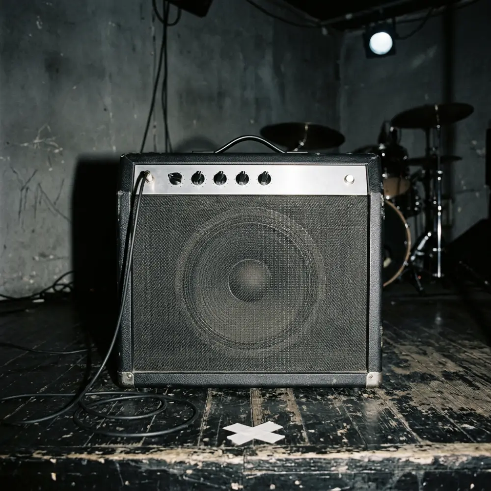
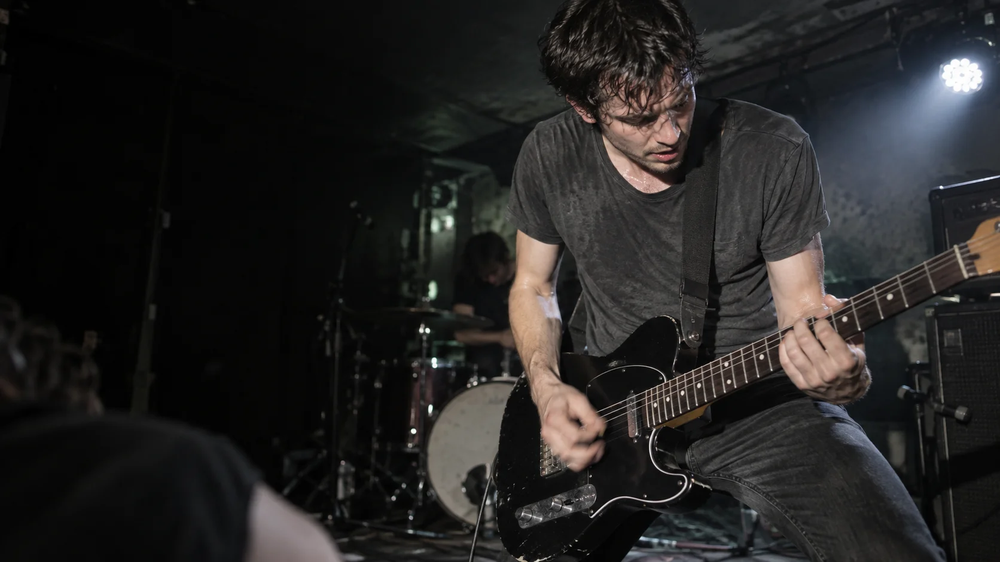
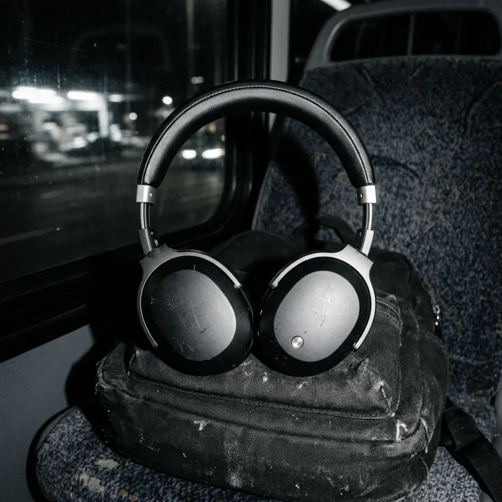

가상 이미지직접 연주하고 · 기타 앰프
DSL40
Combo
올밸브 회로로 클린부터 오버드라이브까지.
두 채널과 출력 전환으로 연습실과 작은 공연장에 맞춰 연주하세요.
- 출력 전환
- 40 / 20W
- 채널 구성
- 2채널

Live Small club
직접 연주하고, 함께 듣고, 혼자 듣는 소리.
Marshall equipment
제품 사진은 로고 없는 가상 이미지로, 실제 제품과 다릅니다.

가상 이미지직접 연주하고 · 기타 앰프
올밸브 회로로 클린부터 오버드라이브까지.
두 채널과 출력 전환으로 연습실과 작은 공연장에 맞춰 연주하세요.
 가상 이미지
가상 이미지
함께 듣고 · 홈 스피커
방 안에서 함께 듣는 음악.
Bluetooth와 AUX·RCA 입력으로 연결하세요.
콘센트 전원 · Bluetooth 5.3
Acton IV 자세히 보기
가상 이미지혼자 듣는 · 오버이어 헤드폰
주변 소음을 줄이고, 음악에 집중하세요.
다 듣고 나면 접어서 가방 안으로.
ANC 사용 시 최대 70시간 · 접이식 구조
Monitor III 자세히 보기Stories
제작 현장과 작은 공연장,
음악을 이어가는 사람들.
Marshall의 앰프 제작은 1962년 런던 Hanwell에서 시작해 1960년대 후반 영국 Bletchley로 옮겨 갔습니다. 설계가 정해지면 나무 외함을 자르고, 섀시와 회로를 만들고, 커버링을 입힌 뒤 조립합니다. 마지막에는 숙련된 테스터가 기타를 연결해 점검합니다.
Marshall의 안내는 작은 공연장 앰프의 조건으로 휴대성과 힘, 다양한 소리를 꼽습니다. 작은 크기와 톤 조절, 내장 이펙트를 볼 점으로 들고, 공간을 압도하지 않는 소리를 강조합니다. 이 사이트의 DSL40 Combo도 안내 목록에 들어 있습니다.
Amplify는 가입비가 없는 Marshall의 멤버십입니다. 회원이 marshall.com에서 주문하면 주문액의 1%가 독립 음악 공연장 지원에 쓰입니다. 장비 지원, 지역 공연 후원, 도움이 더 필요한 공연장과의 협력이 여기에 들어갑니다.
Marshall 공식 페이지를 읽고 요약했습니다. 확인일 .